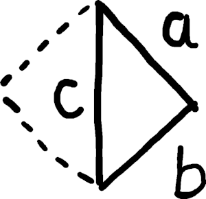
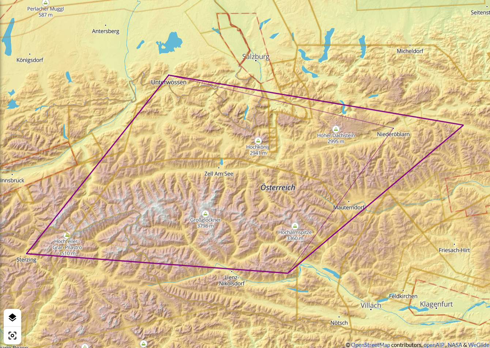
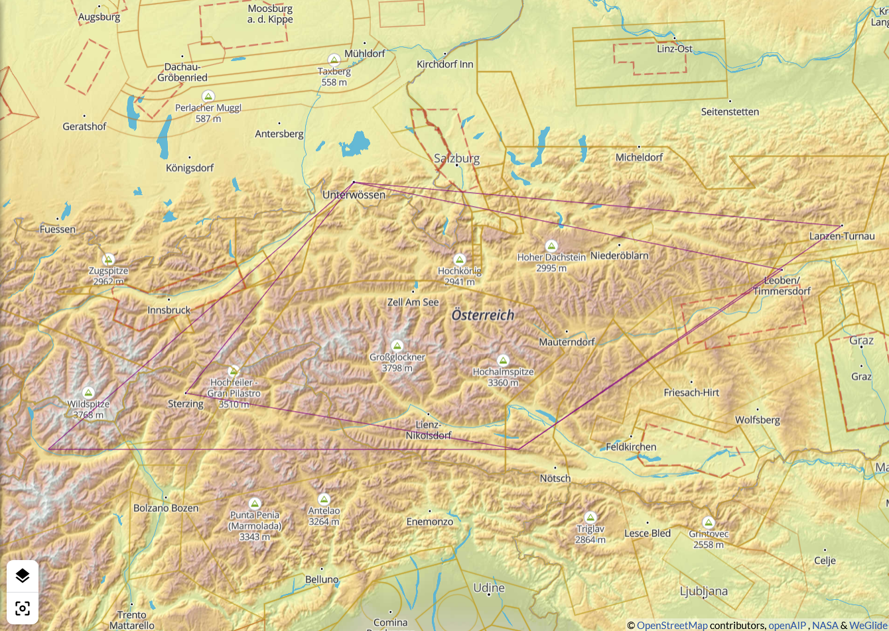
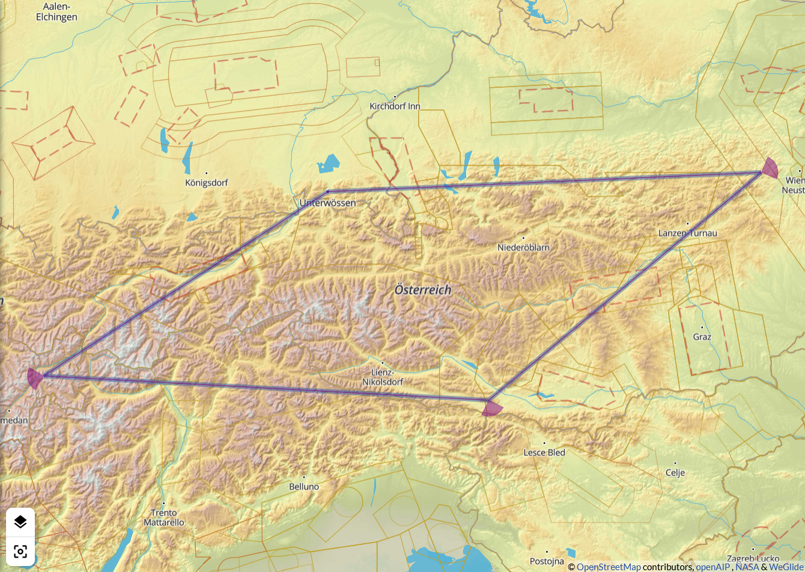
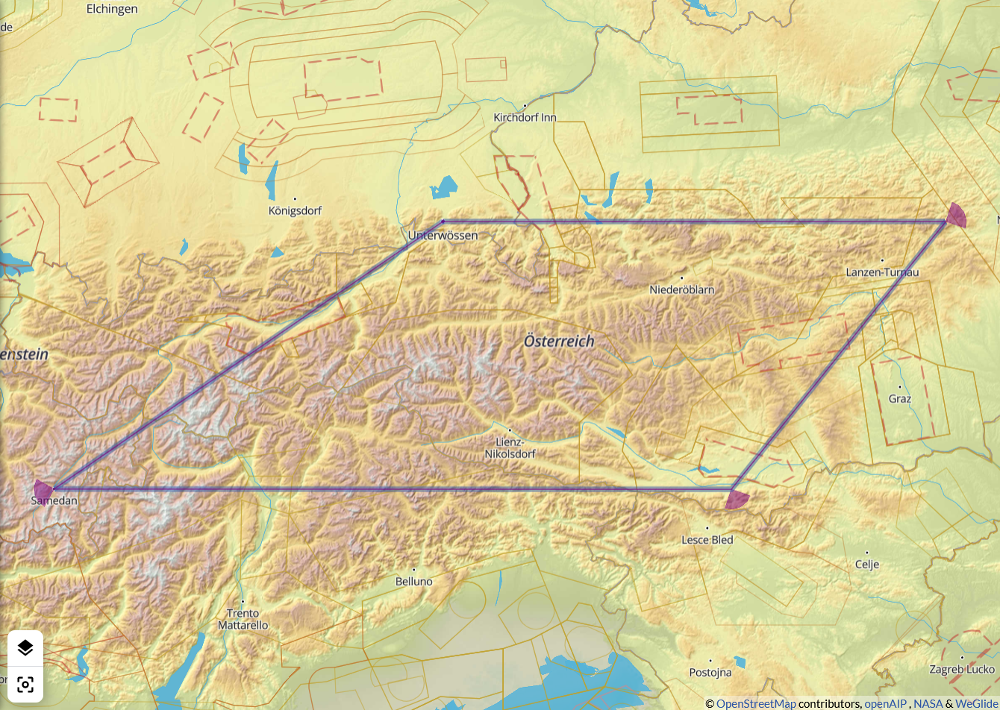
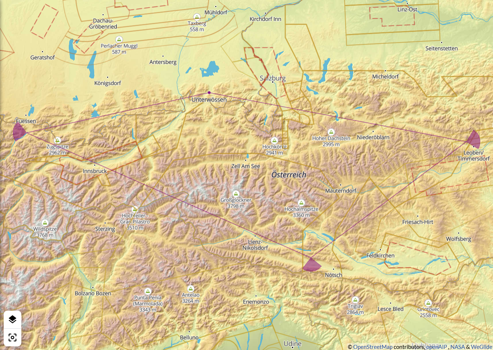
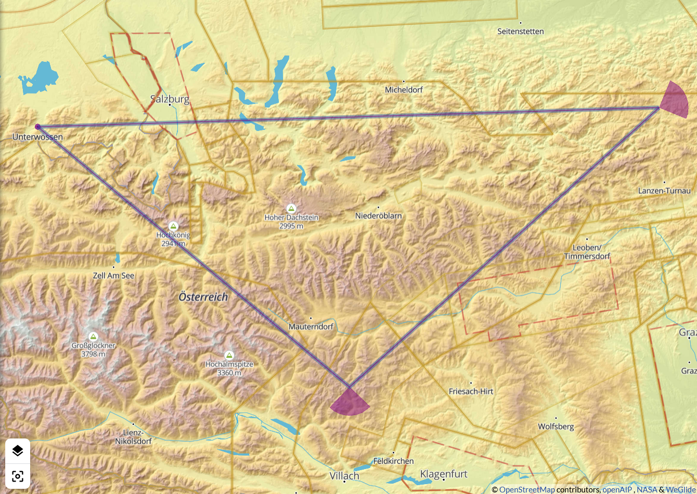

Mathias Münch
2021-02-27
Viereckfliegen macht Laune.
Der zweite Wendepunkt entscheidet

120 km × 2,5 = 300 km → 2 × (a + b) = 600 km

140 km × 3 = 420 km → 2 × (a + b) = 840 km

160 km × 3 ~ 500 km → 2 × (a + b) ~ 1000 km

200 km × 3 = 600 km → 2 × (a + b) = 1200 km

Ist der Flug erst ruiniert, fliegt sich’s gänzlich ungeniert.
Eine Wettbewerbsregel, die nicht einschränkt, sondern anregt


Beispiel-Aufgaben sind verfügbar in WeGlide | Aufgaben unter “AFZ-Streckenflug-210227”.